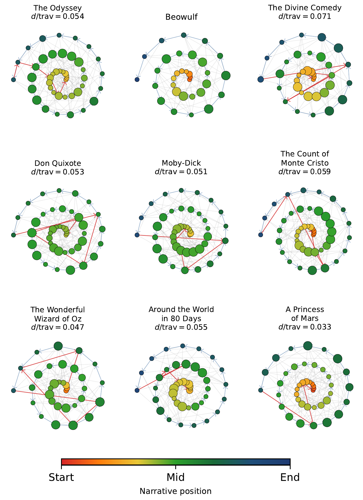
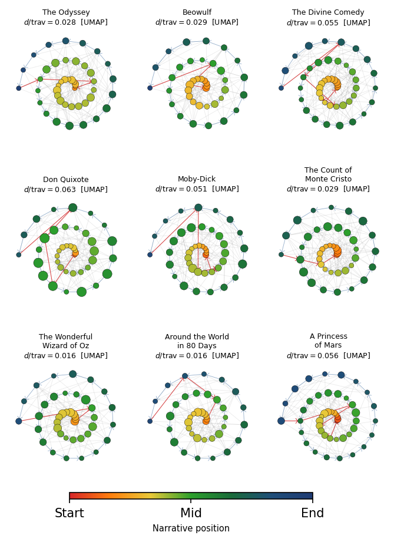
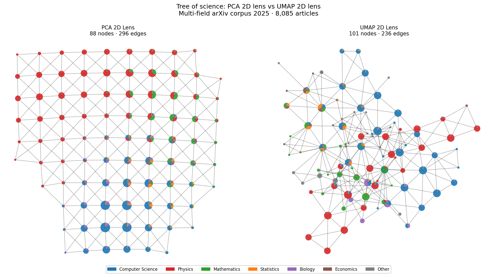

2 Hands on
Before diving into the theory, let’s see TDA in action with seven progressive recipes. The first four are synthetic and build the intuition we’ll need to understand the foundations (Chapter 5): what connected components are, what a hole is, why TDA is robust to noise, and how to locate the specific points that form a topological feature. The last three apply those same ideas to real problems: the hero’s journey myth in classic novels (with the Mapper algorithm), whether scientific disciplines are separate islands or branches of the same tree (with stratified sampling from arXiv), and why UMAP preserves topology where PCA and t-SNE fail (with a torus in high dimension).
The recipes use ripser for persistent homology, gudhi for representative cycles, and kmapper for the Mapper algorithm.
2.1 Recipe 1: Three islands
We’ll start with the simplest possible case: three groups of random points well separated on a plane. The question is: how many “groups” are there, and at what distance do they merge?
First we generate the points with a normal distribution:
import numpy as np
from ripser import ripser
# Three Gaussian clusters separated by 3 units
rng = np.random.default_rng(42)
centros = np.array([[0, 0], [3, 0], [1.5, 3]])
puntos = np.vstack([
rng.normal(loc=c, scale=0.3, size=(50, 2))
for c in centros
])
print(f"Puntos: {len(puntos)}")We compute only the \(H_0\) range — the zeroth homology group, which counts the number of pieces or connected components:
resultado = ripser(puntos, maxdim=0)
dgms = resultado["dgms"]
print(f"Componentes H0: {len(dgms[0])}")ripser reports 150 features in \(H_0\). Why 150 if there are only 3 clusters? Because ripser works with a filtration: it starts with each point isolated (150 components) and, as a scale parameter \(\varepsilon\) (the filtration radius) increases, connects nearby points relative to \(\varepsilon\). Each time two components merge, one “dies.” The persistence diagram of \(H_0\) records when each component is born and when it dies:
# Components with finite death (those that merged)
finitos = dgms[0][np.isfinite(dgms[0][:, 1])]
muertes = np.sort(finitos[:, 1])[::-1]
print(f"Las 2 fusiones más tardías: "
f"ε = {muertes[0]:.2f}, {muertes[1]:.2f}")The last two mergers occur at \(\varepsilon \approx 2.5\) and \(\varepsilon \approx 2.1\) — the moments when the three clusters unite into two, and then into one. The previous 147 mergers occur at much smaller scales: these are points within each cluster connecting to each other. The difference between these scales — large for the real structure, small for internal noise — is exactly what distinguishes signal from noise. We’ll see this mechanism in more detail when we explain the Vietoris-Rips filtration in Chapter 5.
Computationally, computing only \(H_0\) is cheap: the cost is dominated by the \(O(n^2)\) pairwise distances, followed by a union-find algorithm to track the mergers. For our 150 points in \(\mathbb{R}^2\), the computation is instantaneous.
Figure 2.1 shows three ways to visualize the same topological information from \(H_0\) (connected components). The persistence diagram (top right) represents each component as a point with coordinates (birth, death); points far from the diagonal are signal. The three red stars mark the 3 clusters: two late mergers at \(\varepsilon \approx 2.1\) and \(2.5\), plus the immortal component that never dies (indicated with \(\infty\)). The barcode (bottom left) shows the same information as horizontal bars — the three red bars (including the one extending to \(\infty\)) are the real clusters and stand out from the other bars with short birth-to-death intervals. The persistence landscape (persistence landscape, bottom right) transforms the point diagram into a set of continuous mathematical functions, which enormously facilitates direct statistical analysis. The process is intuitive:
- Building “tents”: Each persistence interval \([b, d]\) (where a feature is born at \(b\) and dies at \(d\)) becomes a triangle or “tent.” This tent sits on the horizontal axis between \(b\) and \(d\), reaching its maximum peak exactly at the midpoint, with a height proportional to its lifespan \((d-b)/2\).
- Persistence layers (\(\lambda_k\)): When overlapping all the tents, they are classified by height. The upper function, \(\lambda_1(\varepsilon)\), defines the outer profile or the highest “envelope” of all combined tents; \(\lambda_2(\varepsilon)\) represents the second-highest layer, and so on. In this way, prominent peaks in the first layers visually expose the most robust and long-lived shapes in the data.
The persistence landscape, containing the same information as the previous diagrams, has the key statistical advantage of being able to produce confidence intervals: unlike traditional scatter diagrams, landscapes belong to a vector space (a Banach space, specifically the space of continuous functions or the \(L^p\) space; typically \(L^1\) or \(L^2\)). This allows treating each landscape as a functional random variable, opening the door to the use of rigorous statistical tools. We can compute the mean of several landscapes, apply the Central Limit Theorem, and, crucially, construct uniform confidence intervals for the mean landscape.
An example of this is the dashed gray line, which represents the 95% significance threshold under the null hypothesis (uniform random noise). Any peak that rises above this threshold can be isolated with full statistical confidence as a real, structural signal, separating it mathematically from background noise.

To appreciate the difference, Figure 2.2 shows the same analysis on a uniform cloud of 150 points (no structure). In the persistence diagram all points are close to the diagonal, that is, a single component; in the barcode all bars are shorter and similar, none stands out because the components merge constantly given the similar inter-point distance to bar length; finally, in the persistence landscape, \(\lambda_1\) does not surpass the null hypothesis threshold — there are no clear separations. This is exactly the signal that TDA captures: real topological structure manifests as high persistence, while noise stays glued to the diagonal.

- Generate four clusters instead of three (Recipe 1). How many late mergers do you expect in \(H_0\)? What if two of the clusters are very close together?
- Ask an LLM: “What is a Vietoris-Rips filtration? Explain it to me with the example of points on a circle.” Compare its answer with the intuition from Recipe 1, where components merged as \(\varepsilon\) grew.
2.2 Recipe 2: A ring
If in the first recipe we learned to detect connected components — topologically equivalent to a point — in this second recipe we’ll learn to detect one-dimensional cycles — intuitively, rings or loops — that form \(H_1\), the first homology group.
A traditional statistical analysis would compute the mean (the center) and the variance (the radial spread) of these points — exactly what we’d obtain from a filled disk. TDA, on the other hand, detects that there’s a hole: it distinguishes a donut from a cookie.
In this example, we generate points shaped like a circle and look for the central hole:
import numpy as np
from ripser import ripser
np.random.seed(42)
theta = np.random.uniform(0, 2 * np.pi, 100)
ruido = np.random.normal(0, 0.1, (100, 2))
puntos = np.column_stack([np.cos(theta), np.sin(theta)]) + ruidoNow we request both \(H_0\) and \(H_1\) by setting the maximum dimension to 1:
resultado = ripser(puntos, maxdim=1)
diagramas = resultado["dgms"]
print(f"Características H0 (componentes): {len(diagramas[0])}")
print(f"Características H1 (agujeros): {len(diagramas[1])}")
# The most persistent hole in H1
if len(diagramas[1]) > 0:
persistencias = diagramas[1][:, 1] - diagramas[1][:, 0]
idx = np.argmax(persistencias)
nace = diagramas[1][idx, 0]
print(f"Agujero principal: nace en {nace:.3f}, "
f"muere en {diagramas[1][idx, 1]:.3f}, "
f"persistencia: {persistencias[idx]:.3f}")\(H_0\) shows the same as in Recipe 1: 100 initial components that merge until only one remains — the one that survives with infinite death, confirming that the ring is a single connected piece. Unlike Recipe 1, where the three late mergers produced prominent peaks in the \(H_0\) landscape, here all mergers happen quickly (the points on the circle are close to each other), so the \(H_0\) persistence diagram shows only points glued to the diagonal and the landscape doesn’t surpass the null threshold — there is no clustering structure. The novelty is \(H_1\): among the dozens of features, there is one with very high persistence (\(\approx 1.4\)) and the rest near zero. That persistent feature is the central hole of the circle — a real topological signal. The others are ephemeral artifacts that are born and die quickly as \(\varepsilon\) grows.
The price of going from \(H_0\) to \(H_1\) is computational: ripser needs to consider triangles in addition to edges, and the boundary matrix reduction has worst-case cost \(O(n^3)\) for \(n\) points. For our 100 points it’s instantaneous, but this cubic cost limits TDA to moderately sized datasets. Moreover, each additional homological dimension is dramatically more expensive — \(O(n^4)\) for \(H_2\), and so on. We’ll analyze this scalability in detail in Chapter 4.

The most powerful property of these topological features is their invariance under continuous deformations: if we stretch, bend, or twist the ring without breaking or gluing it, the hole is still there. Figure 2.4 demonstrates this with three different shapes — an oval, a square, and a random curve — that geometrically look nothing alike, but topologically are identical to the circle. In all three cases, \(H_0\) shows a single component (the immortal star, \(\lambda_1\) above the threshold) and \(H_1\) shows a single dominant persistent cycle. Classical statistics would see three very different distributions; topology sees the same shape.

- Generate points on an ellipse instead of a circle (Recipe 2). Does the persistence of the hole in \(H_1\) change? Why?
- What would happen to \(H_1\) if you generated points on a figure “8” (two circles joined together)? How many persistent holes would you expect?
2.3 Recipe 3: Signal, noise, and invariance
Recipe 2 showed us that TDA detects the hole generated by a circle. But how well does it resist noise? And what happens if the circle lives in a high-dimensional space and is completely deformed? These two questions — stability under perturbations and dimensional and topological invariance — are the pillars that make TDA a truly useful tool.
2.3.1 Stability against noise
Let’s repeat Recipe 2 but now with increasing levels of Gaussian noise (\(\sigma\)):
import numpy as np
from ripser import ripser
niveles = [0.05, 0.15, 0.3, 0.5]
for sigma in niveles:
np.random.seed(42)
theta = np.random.uniform(0, 2 * np.pi, 200)
ruido = np.random.normal(0, sigma, (200, 2))
xy = np.column_stack(
[np.cos(theta), np.sin(theta)])
puntos = xy + ruido
dgms = ripser(puntos, maxdim=1)["dgms"]
h1 = dgms[1]
if len(h1) > 0:
pers_h1 = h1[:, 1] - h1[:, 0]
else:
pers_h1 = [0]
print(f"σ = {sigma:.2f} → "
f"max H1 = {max(pers_h1):.3f}")The result shows a smooth degradation: with \(\sigma = 0.05\) the persistence is high (\(\approx 1.5\)), with \(\sigma = 0.3\) it drops significantly, and with \(\sigma = 0.5\) the hole almost disappears — the noise is as large as the circle’s radius. But the important thing is that the change is gradual: a bit more noise produces a proportionally small change in the diagram. This property will be formalized as the stability theorem in Chapter 5, and it is the mathematical reason why TDA is robust to perturbations.
Figure 2.5 shows the effect with three simultaneous representations. Above, the point clouds with increasing noise. In the middle, the \(H_1\) persistence diagrams: the star marks the main hole, which approaches the diagonal as \(\sigma\) grows. Below, the persistence landscapes \(\lambda_1\): the dominant peak flattens gradually, but never disappears abruptly. Compare with the 95% threshold (dashed line): even with \(\sigma = 0.3\), the peak still surpasses the threshold — the hole remains statistically detectable.

2.3.2 The curse of dimensionality
Stability against noise is only half the story. The other half is how TDA behaves when data live in high-dimensional spaces — the typical case in practice: images, genomics, text — everything lives in hundreds or thousands of dimensions.
As the dimension \(d\) grows, a phenomenon known as concentration of measure causes Euclidean distances between points to converge toward the same value. For a circle of radius \(R\) with Gaussian noise of standard deviation \(\sigma\) in \(d\) coordinates, the typical distance between two points is approximately \(\sigma\sqrt{2d}\). When \(\sigma\sqrt{2d}\) exceeds the circle’s diameter (\(\sigma\sqrt{2d} \gtrsim 2R\)), the Vietoris-Rips complex can no longer reliably recover the circular structure: the topological signal approaches the noise level.
To visualize this, we generate a circle of radius \(R = 1.5\) embedded in \(\mathbb{R}^d\) with Gaussian noise \(\sigma = 0.2\) in all coordinates:
import numpy as np
from ripser import ripser
def generar_circulo_ruidoso(n=200, dim=2,
R=1.5, sigma=0.2, seed=42):
"""Circle of radius R in ℝ^2, embedded in ℝ^dim."""
rng = np.random.default_rng(seed)
t = np.linspace(0, 2 * np.pi, n, endpoint=False)
pts = np.zeros((n, dim))
pts[:, 0] = R * np.cos(t)
pts[:, 1] = R * np.sin(t)
pts += rng.normal(0, sigma, (n, dim))
return pts
sigma = 0.2
for dim in [2, 8, 32, 128]:
pts = generar_circulo_ruidoso(dim=dim)
dgms = ripser(pts, maxdim=1)["dgms"]
h1 = dgms[1]
pers = (h1[:, 1] - h1[:, 0]).max() if len(h1) > 0 else 0
disp = sigma * (2 * dim) ** 0.5
print(f"ℝ^{dim} σ√(2d)={disp:.2f} H1={pers:.2f}")With \(d = 2\), the noise spread is \(\sigma\sqrt{2d} \approx 0.57\), small compared to the diameter \(2R = 3\): TDA detects the hole clearly. With \(d = 128\) the spread reaches \(\sigma\sqrt{2d} \approx 3.2\), comparable to the diameter: distances concentrate around a single value and the topological signal of the circle, though present, becomes barely distinguishable from the noise level.
Figure 2.6 shows the contrast. The first row projects the points onto \((x_1, x_{d/2+1})\): in high dimension, \(x_{d/2+1}\) is pure noise and the circle disappears. The second row shows the PCA projection to 2D, which recovers the circle in all cases. The third and fourth rows tell the TDA story: the \(H_1\) diagram shows how the most persistent star approaches the diagonal as \(d\) grows, and the \(\lambda_1\) landscape reflects how the signal-to-noise ratio degrades gradually — the null hypothesis threshold (coordinate permutation) operates at the same distance scale as the real data, so that at \(d = 128\) some \(H_1\) peaks fall near or below the threshold.

PCA works because it seeks the linear projections of maximum variance: in our example, the first two coordinates concentrate all the signal in the \((x_1, x_2)\) plane, which PCA recovers perfectly. Note that this is the most favorable scenario possible for PCA — in real data the signal typically spreads across many correlated dimensions. TDA, by contrast, works with Euclidean distances; as \(d\) grows, the distances converge toward a single value and the topological signal gets buried in the noise fluctuations. This asymmetry motivates preprocessing with UMAP before applying TDA in high dimension, as we will see in Recipe 7.
The first three recipes have given us the basic conceptual tools: \(H_0\) to count components, \(H_1\) to detect holes, persistence to distinguish signal from noise, and the limits of TDA in high dimension. But one natural question remains: if we detect a hole, can we know where it is? Which are the specific points that form it?
- In Figure 2.5, at what \(\sigma\) does the \(H_1\) landscape stop surpassing the 95% threshold? What relationship does that \(\sigma\) have with the circle’s radius?
- In Figure 2.6, PCA recovers the circle at all dimensions while the TDA signal degrades gradually until it becomes barely distinguishable from noise at \(d = 128\). Why does the curse of dimensionality affect TDA more than PCA? In what sense is this a favorable scenario for PCA?
2.4 Recipe 4: Representative cycles
So far we’ve detected holes, but we haven’t answered the most natural question: where is the hole? Which are the specific points and edges that form it? This is the inverse problem of TDA: given a homology generator, find a representative cycle — a closed chain of edges that delimits the detected topological feature.
The GUDHI library solves this problem with flag_persistence_generators(): for each persistent feature in \(H_1\) it returns the birth edge — the edge whose insertion in the filtration created the cycle. Why is this sufficient? Because if the edge \((u, v)\) creates a cycle when inserted, it means a path from \(u\) to \(v\) already existed formed by earlier edges. That path, plus the birth edge, forms the complete cycle.
Let’s reuse the ring from Recipe 2:
import numpy as np
import gudhi
import networkx as nx
np.random.seed(42)
theta = np.random.uniform(0, 2 * np.pi, 100)
ruido = np.random.normal(0, 0.1, (100, 2))
puntos = np.column_stack(
[np.cos(theta), np.sin(theta)]) + ruido
# Build the Rips complex with GUDHI
rips = gudhi.RipsComplex(
points=puntos, max_edge_length=2.5)
st = rips.create_simplex_tree(max_dimension=2)
st.compute_persistence(homology_coeff_field=2)Now we extract the \(H_1\) generators. Each row contains four vertices: the two from the birth edge and the two from the death edge:
gens = st.flag_persistence_generators()
h1_gens = gens[1][0] # shape (m, 4)
# Most persistent row (first):
u, v = int(h1_gens[0, 0]), int(h1_gens[0, 1])
birth_scale = st.filtration([u, v])
print(f"Arista de nacimiento: ({u}, {v}) "
f"a escala {birth_scale:.4f}")To reconstruct the complete cycle, we find the shortest path from \(u\) to \(v\) using only edges inserted before the birth edge:
# Graph with edges prior to the birth edge
G = nx.Graph()
for simplex, filt in st.get_filtration():
if len(simplex) == 2 and filt < birth_scale:
G.add_edge(simplex[0], simplex[1])
ciclo = nx.shortest_path(G, u, v)
print(f"Ciclo: {len(ciclo)} vértices")The result is a closed path of 28 vertices that traverses the ring, covering 350° of angular arc — exactly the chain of points that encloses the central hole. When visualized over the point cloud (in red on Figure 2.7), we see a closed polygon that delimits the empty region.
The computational cost has two phases. The first — building the simplex tree and computing persistence — is the same \(O(n^3)\) as in previous recipes. The second — reconstructing the cycle — is comparatively cheap: building the subgraph of edges prior to birth is \(O(|E|)\) where \(|E|\) is the number of edges in the complex, and the shortest path in the graph (BFS) is \(O(n + |E|)\). For 100 points, both phases are instantaneous.
Why does this matter? Because in real applications — neural networks, gene expression, finance — detecting that “there’s a cycle” is only the first step. What the researcher needs to know is which specific genes, neurons, or assets form that cycle. The representative cycle provides exactly that information: it turns a topological abstraction into a concrete list of domain entities.

The main limitation is that the representative cycle is not unique: there may exist multiple homologous cycles (topologically equivalent) that enclose the same hole. Our reconstruction returns the shortest in number of edges at the birth scale, but there are other algorithms that seek the optimal cycle according to different criteria (minimum geometric length, minimum enclosed area). In practice, the shortest path is sufficient to locate the region of interest.
With this recipe we complete the persistent homology toolbox: we know how to count components (\(H_0\)), detect holes (\(H_1\)), distinguish signal from noise (persistence), work in high dimensions (invariance), and now locate the detected features (representative cycles). Before moving on to real data, we have one more complementary tool: the Mapper algorithm, which produces directly interpretable graphs instead of abstract diagrams.
- Modify the code to extract the representative cycles of the two most persistent cycles in \(H_1\) of a cloud with two concentric rings. Do the points overlap?
- Ask an LLM: “What is the difference between a representative cocycle and a representative cycle in persistent homology? Why does ripser return cocycles?”
2.5 Recipe 5: Mapper and the Hero’s Journey
In 1949, Joseph Campbell published The Hero with a Thousand Faces, where he argued that all great stories follow a circular pattern: the protagonist leaves home, faces trials, and returns transformed. If Campbell is right, the shape of a novel should be a loop — and with the right tool, we should be able to see it directly.
The Mapper algorithm is that tool. Unlike persistent homology — which summarizes shape in abstract diagrams — Mapper builds a simplified graph that is topologically equivalent and that we can inspect visually. Its operation is intuitive:
- Lens function (lens): We choose a function that projects the data onto a low-dimensional space. Mapper uses this projection to organize the cover.
- Overlapping cover: We divide the range of the lens into overlapping intervals. Each interval contains a subset of the data.
- Local clustering: Within each interval, we group the points by similarity (DBSCAN, for example).
- Connection: Two clusters from adjacent intervals are connected by an edge if they share points (those in the overlap).
DBSCAN groups points that form dense regions without requiring us to specify in advance how many clusters there are. In Mapper we use it inside each patch of the cover: the lens decides which points fall into the patch, and DBSCAN decides whether those points form one or several nodes of the graph.
The idea has two density parameters and a choice of distance. eps is the neighborhood radius: two points are neighbors if they are closer than that radius, measured with the chosen metric. min_samples is the minimum number of neighbors needed to consider a region dense. In text embeddings, for example, using Euclidean distance versus cosine distance changes what “being close” means. The algorithm scans the points, marks as core those with enough neighbors, merges core points that are connected to each other, adds as border the points near some core, and leaves isolated points as noise.
Its strength is that it doesn’t require predetermining the number of clusters, it detects irregular shapes, and it can leave out isolated observations. Its weakness is that it depends on scale: an eps that’s too small fragments the patch, and one that’s too large merges everything. Moreover, like any distance-based method, it suffers in high dimension when distances lose contrast. That’s why, in Mapper, the space where DBSCAN is applied matters as much as the lens: the lens organizes the cover, but DBSCAN needs a metric where neighbor and non-neighbor remain distinguishable.
The resulting graph captures the “shape” of the data: nodes are groups of similar points, and edges reflect overlap between neighboring groups. The choice of lens function is crucial — we’ll return to it after explaining how to turn text into numerical data.
To apply Mapper to text we need to convert a novel — a continuous stream of words — into a point cloud. The process has two steps: chunking and embedding.
Chunking consists of dividing the text into overlapping fixed-size windows. We use windows of 500 words with 50% overlap (a stride of 250 words). Each window captures roughly one narrative “scene” — enough context for the meaning to be coherent, but not so much as to mix distinct topics. The overlap ensures we don’t lose transitions between scenes: every point in the narrative appears in at least two consecutive windows.
Embedding transforms each text window into a numerical vector. We use the all-MiniLM-L6-v2 model from the sentence-transformers library: a neural network trained to place semantically similar texts at nearby points in vector space. The result is a 384-dimensional vector per window — the ambient space in which we work. For a typical 125,000-word novel, this produces roughly 500 points in \(\mathbb{R}^{384}\).
Why 384 dimensions? That’s the size the model designers chose to balance expressiveness and efficiency. But the intrinsic dimensionality of language — the number of real degrees of freedom that semantics requires — is much smaller. Recent research estimates that text embeddings live on manifolds of between 5 and 20 effective dimensions, depending on the task and corpus. It is precisely this discrepancy between the ambient dimensionality (384) and the intrinsic one (~10–20) that makes TDA work: the data form a low-dimensional manifold with non-trivial topology — loops, holes, branches — that the techniques we’ve seen can detect.
2.5.1 Choosing the lens
Now that we know each novel is a point cloud in \(\mathbb{R}^{384}\), the critical question remains: what lens function should we use in Mapper?
A first intuition would be to use narrative position (from 0% to 100%): divide the novel into temporal bands and group passages within each band by similarity. With a temporal lens, a linear chain would indicate a narrative with no return, and a loop would indicate that the ending resembles the beginning. However, this choice has a fundamental problem: the temporal lens forces a nearly linear topology. If the intervals cover time bands, clusters from non-adjacent bands rarely share points (overlap only occurs between contiguous intervals), necessarily producing a chain — regardless of whether the story is circular or not. The temporal lens assumes the very structure we want to detect.
The alternative is to use a semantic lens: the first two principal components (PCA) of the embeddings. This lens groups passages by meaning, not by temporal order. If the end of a novel resembles the beginning semantically, both will fall into the same intervals of the PCA lens and end up in the same clusters — creating edges between “early” and “late” nodes. With a PCA lens, the graph reflects the actual semantic structure of the narrative, and any circularity detected is genuine.
We downloaded nine classic novels from Project Gutenberg (all in the public domain) and applied this chunking + embedding process. The pre-computed results are in code/tda/data/hero_books.npz.
import numpy as np
import kmapper as km
from sklearn.decomposition import PCA
from sklearn.cluster import DBSCAN
data = np.load("code/tda/data/hero_books.npz",
allow_pickle=True)
embeddings = data["embeddings"] # (6147, 384)
positions = data["positions"] # posición narrativa [0, 1]
book_ids = data["book_ids"] # índice del libro
book_names = [str(n) for n in data["book_names"]]We apply Mapper to each novel with two independent reductions: a 2D PCA for the lens (which organizes the cover grid) and a 20D PCA for clustering. The 20 components cover the mid-range of the estimated intrinsic dimensionality of sentence embeddings (~10–30 dimensions), with a distance coefficient of variation of ~32% that makes DBSCAN discriminative; if we used the original 384 components directly, all distances would concentrate around the same value and DBSCAN couldn’t distinguish neighbors from non-neighbors:
mapper = km.KeplerMapper(verbose=0)
for i, name in enumerate(book_names):
mask = book_ids == i
emb = embeddings[mask]
pos = positions[mask]
# Lente semántica: PCA 2D independiente
# (organiza la cuadrícula de cobertura Mapper)
lens = PCA(n_components=2).fit_transform(emb)
# Clustering: PCA 20D independiente
# (rango medio de dimensión intrínseca, CV ~32%)
emb_clust = PCA(n_components=20).fit_transform(emb)
# Construir el grafo Mapper
graph = mapper.map(
lens, emb_clust,
cover=km.Cover(n_cubes=7,
perc_overlap=0.35),
clusterer=DBSCAN(eps=1.5,
min_samples=3))
n_nodes = len(graph["nodes"])
n_edges = sum(
len(v) for v in graph["links"].values())
print(f" {name:20s} "
f"nodos={n_nodes}, aristas={n_edges}")The result produces graphs with between 32 and 45 nodes for all novels. Each node is a cluster of thematically similar passages, and each edge indicates overlap between clusters — points that belong to more than one cluster thanks to the cover overlap. The graphs are so dense that the mere presence of cycles means nothing — the circularity is a combinatorial artifact of the density, not a narrative signature.
2.5.2 The return as graph distance
To validate Campbell’s hypothesis we need a more precise question: is the ending of the novel semantically close to the beginning? Specifically, if Campbell is right, the return path — from the last node to the first through the graph’s semantic edges — should be short compared to the total journey.
We define the metric \(d/\text{trav}\):
- \(d\) = distance (shortest path) between the initial and final nodes in the Mapper graph.
- \(\text{trav}\) = sum of distances between consecutive nodes in chronological order — the “cost of the journey.”
- \(d/\text{trav}\) = relative cost of the return. If Campbell is right, this ratio should be anomalously low.
To assess “anomalously low,” we use a cyclic shift test: we imagine the narrative as a cycle (the end connects to the beginning) and try all possible cut points. If we cut between nodes \(i\) and \(i{+}1\), the new “beginning” is node \(i{+}1\) and the new “end” is node \(i\). This gives us \(k{-}1\) null ratios to compare the real one against.
Figure 2.8 visualizes the results with a spiral hypergraph: each node is placed on a spiral that advances with the narrative (from center outward), gray edges are the Mapper’s semantic connections, blue arrows mark the chronological traversal, and red arrows show the return path — the shortest route through the semantic graph from the end back to the beginning. Color indicates narrative position: red (start) \(\to\) orange \(\to\) green \(\to\) dark blue (end).

The cyclic test results are striking:
| Novel | \(|V|\) | \(d\) | trav | \(d/\text{trav}\) | \(\mu_{\text{nulo}}\) | \(p\) |
|---|---|---|---|---|---|---|
| The Odyssey | 43 | 5 | 92 | 0.054 | 0.024 | 1.000 |
| Beowulf | 32 | — | 181 | — | 0.032 | 1.000 |
| The Divine Comedy | 35 | 5 | 70 | 0.071 | 0.029 | 0.971 |
| Don Quixote | 43 | 5 | 96 | 0.052 | 0.024 | 1.000 |
| Moby-Dick | 44 | 6 | 117 | 0.051 | 0.023 | 1.000 |
| The Count of Monte Cristo | 45 | 5 | 85 | 0.059 | 0.023 | 0.955 |
| The Wonderful Wizard of Oz | 33 | 5 | 106 | 0.047 | 0.031 | 0.938 |
| Around the World in Eighty Days | 43 | 5 | 91 | 0.055 | 0.024 | 1.000 |
| A Princess of Mars | 42 | 3 | 91 | 0.033 | 0.024 | 0.902 |
The value \(p \approx 1.0\) for all novels means exactly the opposite of what Campbell predicts: the beginning and end of a novel are farther apart semantically than any two consecutive points. Why? Because chronologically adjacent nodes tend to be at distance 1–2 in the semantic graph — the text changes gradually. But the beginning and end are the narrative extremes: authors open and close with deliberately distinct tones, vocabularies, and contexts. In the extreme case of Beowulf, the graph is outright disconnected between the initial and final nodes: no semantic path connects them at all — the furthest possible case from Campbell’s prediction.
2.5.3 An honest negative result
This analysis does not validate Campbell’s hypothesis. A natural counterargument would be: “maybe the return isn’t semantic but geographic — the hero returns to the same place, not the same theme.” We checked: filtering only passages that mention geographic locations (detected with named entity recognition: cities, countries, regions) and repeating the full analysis, the results are indistinguishable — \(d/\text{trav}\) doesn’t improve for any novel.
The conclusion is straightforward: the monomyth theory, at least operationalized as proximity in embedding space — whether from full text or filtered by locations — does not produce a detectable signal. This aligns with decades of criticism of Campbell: the circularity he describes is so flexible that it can be projected onto almost any narrative post hoc, but it does not generate falsifiable predictions when formalized. TDA gives us the rigorous tool to quantify the shape of a narrative — and that tool tells us novels are not circular.
The advantage of Mapper over pure persistent homology is direct interpretability: we don’t need to interpret an abstract diagram — we can see the shape of the story in the hypergraph. Each node corresponds to a group of thematically similar passages, and each edge indicates semantic proximity. The spiral simultaneously reveals temporal structure (position) and semantic structure (connections), making explicit why the return doesn’t work: the red arrows cross nearly the entire graph.
The limitation is that Mapper depends on parameters — number of intervals, overlap percentage, clustering algorithm — and the resulting graph can change with these settings. In practice, if the structure is robust (like a clear hero’s journey), it appears across a wide range of parameters.
- If you used narrative position (time) as the lens instead of PCA, what topology would you expect in the Mapper graph? Why can’t that choice of lens detect circularity?
- Modify the Mapper parameters (
n_cubes,perc_overlap) and observe how the graph changes for The Odyssey. At what parameters does \(\beta_1\) drop to zero? Is the graph density robust or an artifact of the configuration? - The cyclic test shows that the beginning and end of novels are farther apart than average. Design an alternative test: instead of \(d/\text{trav}\), use the direct cosine similarity between the mean embedding of the first and last chunks. Does the conclusion change?
- Ask an LLM: “What are the main academic criticisms of Joseph Campbell’s monomyth theory?” Compare with our quantitative result.
2.6 Recipe 6: The Tree of Science
Do scientific disciplines have real topological boundaries — voids in semantic space that no researcher crosses — or are they simply dense zones of a single continuous manifold? The question is not rhetorical: if science is a single continent, “distant” fields like computational biology and high-energy physics should be connected by bridges of interdisciplinary papers without any significant void. If there are islands, there would be communities speaking different languages with no shared vocabulary and no intermediary.
To answer rigorously, we downloaded 8,085 articles from arXiv in 2025 using proportional stratified sampling: we allocated a budget of 10,000 draws across 29 categories in proportion to their publication volume that year — the 29 categories total approximately 200,000 submissions in 2025, so the resulting corpus of 8,085 articles represents roughly 4% of available output. The pre-computed data is in code/tda/data/arxiv_ciencia.npz.
The corpus covers seven macro fields: Computer Science (3,181 papers), Physics (2,455), Mathematics (978), Statistics (432), Biology (432), Economics (283), and Other (324).
We load the data and apply a preliminary dimensionality reduction. The embeddings live in \(\mathbb{R}^{384}\), but as we saw in the limitations section, at that dimensionality Euclidean distances concentrate — all pairs of points end up at a similar distance — and ripser loses the resolution to distinguish real separations from noise. Reducing to 50 principal components preserves 58% of explained variance — enough to retain the semantic differences between disciplines — while recovering the geometric discrimination that ripser needs:
import numpy as np
from sklearn.decomposition import PCA
data = np.load("code/tda/data/arxiv_ciencia.npz",
allow_pickle=True)
emb = data["embeddings"] # (8085, 384)
titles = data["titles"]
cats = data["categories"] # e.g. "cs.LG"
# MACRO_FIELD asigna cada categoría a su campo macro
# (definido en diagrama_ciencia.py)
fields = np.array([MACRO_FIELD.get(c, "Otros") for c in cats])
emb_red = PCA(
n_components=50, random_state=42
).fit_transform(emb)2.6.1 What are the branches of science?
The most direct question one can ask about the corpus is how many independent branches science has: is there a single continuous manifold, or do topologically isolated communities exist — islands — that share no bridges with the rest? Answering requires two steps: measuring the geometric separation between fields (to identify island candidates) and then applying the topological test (to determine whether that separation exceeds the statistical noise threshold).
We first check the geometric distances between the centroids of each field in the embedding space:
field_names = list(np.unique(fields))
centroids = {f: emb_red[fields == f].mean(axis=0)
for f in field_names}
print("Distancias entre centroides:")
for i, f1 in enumerate(field_names):
for f2 in field_names[i+1:]:
d = np.linalg.norm(centroids[f1] - centroids[f2])
print(f" {f1} – {f2}: {d:.4f}")Distances range from 0.31 (Computer Science–Statistics, the closest) to 0.60 (Physics–Biology, the farthest apart). There is real geometric separation between disciplines, which opens the possibility that multiple branches exist. The topological question is whether that separation exceeds the noise threshold: if it does, there is more than one branch; if not, science is a single connected continent.
We compute \(H_0\) with ripser on the reduced corpus and estimate the 95% significance threshold via bootstrap (200 permutations of 500 random uniform points in the bounding box; the full protocol is developed in Section 5.2.1):
from ripser import ripser
dgms = ripser(emb_red, maxdim=0)["dgms"]
h0 = dgms[0]
rng = np.random.default_rng(42)
low, high = emb_red.min(axis=0), emb_red.max(axis=0)
null_max = []
for _ in range(200):
pts = rng.uniform(low, high, size=(500, emb_red.shape[1]))
h = ripser(pts, maxdim=0)["dgms"][0]
fin = h[np.isfinite(h[:, 1])]
pers = fin[:, 1] - fin[:, 0]
null_max.append(pers.max() if len(fin) else 0)
thresh = np.percentile(null_max, 95)
finite_h0 = h0[np.isfinite(h0[:, 1])]
pers_h0 = finite_h0[:, 1] - finite_h0[:, 0]
N_RAMAS = int((pers_h0 > thresh).sum()) + 1
print(f"Umbral 95% = {thresh:.4f}")
print(f"Barra más larga = {pers_h0.max():.4f}")
print(f"N_RAMAS = {N_RAMAS}")The result is decisive: N_RAMAS = 1. The 95% bootstrap threshold sits at 1.67; the longest \(H_0\) bar barely reaches 0.70 — only 42% of the threshold. Although disciplines are geometrically separated, the deepest gap between any pair of fields is less than half of what would be needed to constitute a topologically significant island.
The interpretation is precise: there always exists a continuous path of papers through semantic space connecting any pair of disciplines without crossing a statistically significant void. Computer Science and Physics are not islands; they are dense regions of the same continuous manifold, joined by papers on computational physics, quantum simulation, and machine learning for condensed matter.
Figure 2.9 shows the result. The \(H_0\) persistence diagram (left) concentrates all points near the diagonal — no bar exceeds the null threshold (dashed line). The \(\lambda_1\) landscape (right) stays below the threshold across the entire range. Compare with Recipe 1 (three separate islands): there \(\lambda_1\) clearly exceeded the null line. Here, science is a continuum.

Single linkage clustering is the only hierarchical variant that exactly reproduces the connected components of the Vietoris-Rips filtration. Other variants — Ward, complete linkage, average linkage — produce different dendrograms and have no direct topological interpretation in terms of \(H_0\). See Section 5.2.1 for the proof.
2.6.2 How are disciplines organized in semantic space?
The result \(H_0 = 1\) does not say that science is homogeneous; it says that it is connected. The next question is visual and structural: how are the fields distributed in semantic space? Are there clearly separated regions, or does everything blend together?
For this particular corpus, a 1D PCA lens would capture the axis of maximum variance: the gradient between formally symbolic fields — pure mathematics, theoretical physics, laden with symbols and proofs — at one end, and empirical-statistical fields — biology, economics, data science, with experimental and probabilistic vocabulary — at the other. The resulting Mapper has exactly 10 nodes and 9 edges — the definition of a tree (\(N\) nodes, \(N-1\) edges, no cycles). The mathematical-physical trunk can bifurcate into abstract algebra and computational physics, but transversal connections remain invisible: statistical machine learning papers, which mix CS and statistics vocabularies, fall at very different points along the PC1 axis; since their cover intervals do not overlap in that single dimension, they create no edge between those two regions. With the 2D PCA lens, the second principal component adds an axis that roughly separates life sciences from physical and computational sciences: now a patch can overlap with neighbors in both the PC1 and PC2 directions, and those transversal connections materialize as edges in the graph. The result — 88 nodes and 296 edges — includes cycles that reflect the true interdisciplinary network.
Figure 2.10 shows both graphs side by side with the same field color palette. The difference is visual and immediate: the left panel (1D lens) is a chain with some branching; the right panel (2D lens) is a dense network with multiple cycles.

import kmapper as km
from sklearn.cluster import DBSCAN
# Lente: PCA 2D independiente
# (organiza la cuadrícula de cobertura)
lens = PCA(
n_components=2, random_state=42
).fit_transform(emb)
# Clustering: PCA 20D independiente
# (dimensión intrínseca ~10-30D, CV de distancias ~32%)
emb_clust = PCA(
n_components=20, random_state=42
).fit_transform(emb)
mapper = km.KeplerMapper(verbose=0)
graph = mapper.map(
lens, emb_clust,
cover=km.Cover(n_cubes=10, perc_overlap=0.4),
clusterer=DBSCAN(eps=2.0, min_samples=3),
)
n_nodes = len(graph["nodes"])
n_edges = sum(len(v) for v in graph["links"].values())
print(f"Mapper: {n_nodes} nodos, {n_edges} aristas")The result is 88 nodes and 296 edges — a 2D graph with cycles and branching, very different from the chain a 1D lens would have produced. Each node is a cluster of thematically similar papers within a patch of the PCA grid; each edge indicates that two clusters share papers in the overlap zone. Nodes colored by field reveal the geography of the corpus: Computer Science and Physics occupy dense regions in the center; Mathematics and Statistics form an intermediate strip; Biology and Economics appear at the peripheries. Nodes with multi-colored sectors are the interdisciplinary bridges: papers that fall on the boundary between regions and connect vocabularies from two or more disciplines.

2.6.3 Implications for the scientist
This result has a direct consequence for anyone who researches or innovates in any field. If science is a single continuous manifold, the question is not “which island does my idea belong to?” but “in which region of the continent am I, and what are the adjacent less-explored zones?” The peripheral Mapper nodes — the inter-field bridges — point to exactly those zones: papers that have already crossed the disciplinary boundary and that open paths toward the vocabulary and techniques of the neighboring field.
The same workflow — stratified collection, \(H_0\) with bootstrap, Mapper with a 2D PCA lens — can be run on any subset of the corpus to ask more specific questions: “Is the quantum simulation subfield an island within Physics, or is it connected to Computer Science?”; “Which papers connect econometrics with Bayesian statistics?” The complete code is in code/tda/diagrama_ciencia.py.
- The analysis produces N_RAMAS = 1 at 95% confidence over 29 arXiv 2025 categories. Would the result change if we include only the 5 largest categories (cs.LG, cs.CV, cs.CL, quant-ph, hep-th)? Why?
- The longest \(H_0\) bar has persistence 0.70 — 42% of the threshold 1.67. Interpret this value: which pair of disciplines produces that bar? What kind of papers would form the “minimum bridge” connecting them?
- The Mapper graph with a 1D PCA lens produces a tree (10 nodes, 9 edges, no cycles). What would it imply for the structure of scientific knowledge if there were a cycle in the Mapper graph? What kind of papers would form that cycle?
- The ripser analysis shows \(\beta_1 = 0\): no statistically significant \(H_1\) cycle exists in the arXiv corpus. If, hypothetically, a persistent cycle above the threshold had appeared, what would it mean to extract its representative cycle (see Recipe 4)? Which disciplines or subfields would you expect to form that semantic loop?
2.7 Recipe 7: UMAP and Topological Dimensionality Reduction
In the previous recipes we worked with low-dimensional data (Recipes 1–4) or reduced it beforehand with PCA (Recipes 5–6). Dimensionality reduction is not optional: in high dimensions, Euclidean distances concentrate and the Vietoris-Rips filtration loses resolution (see Chapter 4 for details). PCA is the most common option, but it is a linear transformation — it projects onto the subspace of maximum variance without considering the topological structure of the data. What happens when the data has an intrinsically nonlinear shape embedded in high dimensions?
This recipe uses an object whose topology we know a priori — a torus with \(\beta_1 = 2\) — to compare PCA and UMAP as dimensionality reduction steps before applying persistent homology. With the correct answer known in advance, we can evaluate the validation protocol from Section 5.8 under controlled conditions: if UMAP passes the protocol and PCA fails, we have evidence that the protocol correctly discriminates between a faithful and an unfaithful reduction.
A torus (the surface of a donut) is the perfect example: its topology has two independent cycles — one “around the hole” and another “through the tube” — which manifest as rank 2 in \(H_1\), or in other words, a Betti number \(\beta_1=2\). If we generate 1,000 points on a torus and embed them in \(\mathbb{R}^{50}\) via a random nonlinear transformation — specifically, \(\mathbf{p} = \sin(\mathbf{x}_{3D} \cdot W + \phi)\) where \(W\) is a random matrix — the question is: which dimensionality reduction method better preserves these two cycles? The nonlinearity is essential: with a simple orthogonal rotation, PCA could invert it exactly and recover both cycles without difficulty. By using a nonlinear transformation, we block that easy escape and truly test each method’s ability to navigate a deformed manifold.
First we generate a three-dimensional torus with radii \(R=2\) and \(r=1\) — a 2:1 ratio that makes the two cycles comparable in size — and embed it in \(\mathbb{R}^{50}\) with the nonlinear transformation described:
import numpy as np
def generar_toro(n=1000, R=2.0, r=1.0,
dim_ambiente=50, ruido=0.08, seed=42):
"""Toro ruidoso incrustado en R^dim_ambiente."""
rng = np.random.default_rng(seed)
theta = rng.uniform(0, 2 * np.pi, n) # ciclo mayor
phi = rng.uniform(0, 2 * np.pi, n) # ciclo menor
x = (R + r * np.cos(phi)) * np.cos(theta)
y = (R + r * np.cos(phi)) * np.sin(theta)
z = r * np.sin(phi)
toro_3d = np.column_stack([x, y, z])
# Incrustar en R^dim_ambiente con proyección senoidal:
# puntos = sin(toro_3d @ W + fase)
# Suave (UMAP preserva vecindades) pero no lineal
# (PCA no puede invertirla y pierde el ciclo menor).
rng2 = np.random.default_rng(seed + 1)
W = rng2.standard_normal((3, dim_ambiente)) * 0.7
fase = rng2.uniform(0, 2 * np.pi, dim_ambiente)
puntos = np.sin(toro_3d @ W + fase)
puntos += rng2.normal(0, ruido * 0.3, puntos.shape)
return puntos, theta, phi
puntos, theta, phi = generar_toro(n=1000, dim_ambiente=50)
print(f"Toro: {puntos.shape}")We reduce dimensionality with two methods — PCA and UMAP — and compute \(H_1\) on each 3D reduction:
from sklearn.decomposition import PCA
import umap
from ripser import ripser
# PCA: proyección lineal (máxima varianza)
red_pca = PCA(n_components=3).fit_transform(puntos)
# UMAP: preservación de estructura topológica
red_umap = umap.UMAP(
n_components=3, n_neighbors=15,
min_dist=0.1, random_state=42,
).fit_transform(puntos)
for nombre, red in [("PCA", red_pca), ("UMAP", red_umap)]:
dgms = ripser(red, maxdim=1)["dgms"]
h1 = dgms[1]
pers = h1[:, 1] - h1[:, 0]
pers_fin = pers[np.isfinite(pers)]
umbral = 0.3 * pers_fin.max()
n_ciclos = int((pers_fin > umbral).sum())
print(f"{nombre}: {n_ciclos} ciclos "
f"(max pers = {pers_fin.max():.3f})")The results are:
| Method | \(\beta_1\) detected | \(\lambda_2\) exceeds null line | Narrow bootstrap band | Validation |
|---|---|---|---|---|
| PCA | 1 (expected: 2) | No | Yes | Fails |
| UMAP | 2 ✓ | Yes | Yes | Passes |
PCA, being linear, flattens the torus onto a plane: it preserves the major cycle (the “around the hole” one, which explains more variance) but loses the minor cycle (the “through the tube” one). UMAP consistently recovers both cycles with persistence clearly above the 95% null threshold.
Figure 2.12 makes this visible. The left column is the reference: the original torus in \(\mathbb{R}^3\), with the color gradient \(\theta\) running continuously along the tube. The center column (PCA) and the right column (UMAP) show the 3D projections after the nonlinear embedding. Here is the visual trap: the PCA projection may offer clean geometry — an ellipsoid or even a cloud that resembles a donut — while the UMAP projection may look geometrically more distorted. This is exactly what we expect: PCA maximizes variance, not topology, and with a nonlinear embedding it can recover apparently reasonable geometry; UMAP maximizes the preservation of local connectivity, which produces geometrically irregular but topologically correct shapes in 3D. The middle row resolves the ambiguity: the \(H_1\) persistence diagrams show two stars (two persistent cycles) only with UMAP, while PCA detects barely one. The persistence of each cycle — its topological “importance” — is read as the vertical distance to the diagonal (death − birth), not as the absolute position on the \(y\)-axis: a star at coordinates (0.4, 2.2) has persistence 1.8, even though its \(y\)-value is 2.2. This distance is exactly twice the corresponding peak in the landscape (bottom row): if λ₁ reaches a height of 0.9, the associated star is at distance 1.8 from the diagonal. So the two indicators are redundant and confirm each other. The bottom row confirms with the persistence landscape: only UMAP has layers \(\lambda_1\) (red) and \(\lambda_2\) (blue) exceeding the 95% null threshold (dashed line), statistically confirming the recovery of \(\beta_1 = 2\). Visual appearance is misleading; the landscape is the topological truth.
Why does UMAP preserve both cycles while PCA loses one? The detailed explanation will be in Section 5.9: in short, UMAP is internally a TDA algorithm that explicitly optimizes the preservation of the simplicial structure of the data, while PCA maximizes variance with no topological guarantees.
This protocol — \(\beta_k\) consistency + bootstrap band + null line — is the general tool for validating any dimensionality reduction prior to TDA. In Recipe 7 we knew the answer and could confirm that the protocol discriminates correctly. In Recipe 8 we will apply it to real data where the answer is not known in advance: in that context, “internal consistency” is redefined as agreement between the \(\beta_k\) of the Mapper nerve and the \(\beta_k\) computed with ripser directly on the reference embeddings.

The practical implication is clear: when we have high-dimensional data and want to apply persistent homology, UMAP is the natural reduction step — not because it is “better” in a generic sense, but because its mathematical objective (preserving the fuzzy simplicial structure) is aligned with what ripser will measure afterward. PCA is a fast and deterministic alternative, but being linear it can lose nonlinear structure such as the two cycles of the torus.
The complete code is in code/tda/umap_reduccion.py.
- The torus has \(\beta_1 = 2\). How many persistent cycles would you expect in \(H_1\) if the data were a sphere (\(S^2\)) in \(\mathbb{R}^{50}\)? What about a 3-dimensional torus (\(T^3 = S^1 \times S^1 \times S^1\))?
- UMAP uses \(k\) neighbors to calibrate the local scale. Experiment with \(k = 5\), \(k = 15\), and \(k = 50\): how does it affect the number of cycles detected by
ripser? Is there an optimal value, or is it robust? - Ask an LLM: “Explain why UMAP preserves global topology better than PCA when the data has nonlinear structure.”
- Apply UMAP as the lens function — instead of PCA — in the Mapper from Recipes 5 and 6. What structure do you expect to see in the resulting graph? How do you predict the \(d/\text{trav}\) ratios (Recipe 5) and the number of nodes and edges (Recipe 6) will change?
2.8 Recipe 8: UMAP and Mapper Applied to the Hero’s Journey and the Tree of Science
Recipes 5 and 6 use PCA as the Mapper lens function: they project the embeddings onto the first two principal components and build the graph from that linear plane. Recipe 7 showed that UMAP preserves non-linear structure better than PCA — but in a different context: as a dimensionality reduction step before ripser, going from \(\mathbb{R}^{384}\) down to \(\mathbb{R}^3\) to compute persistent homology. This recipe closes the loop and poses the natural question: what happens if we replace PCA with UMAP as the Mapper lens function, without any additional dimensionality reduction?
The distinction matters. In Recipe 7, UMAP reduces — the three resulting components feed directly into ripser. Here, UMAP organizes the cover: the two UMAP components act as coordinates for the grid over which Mapper builds its patches, but the clustering within each patch is done in the original high-dimensional space. We are not reducing to compute homology — we are reducing only to define the lens.
2.8.1 The Hero’s Journey with UMAP Lens
We return to the embeddings of the nine novels from Recipe 5 and change only the lens function. The lens goes from PCA(2) to UMAP(2): instead of projecting onto the two axes of maximum linear variance, Mapper lays its grid over the non-linear semantic manifold learned by UMAP. The local clustering, by contrast, is done with DBSCAN directly on the original embeddings in \(\mathbb{R}^{384}\), using cosine distance. The separation is deliberate: UMAP decides which patches cover the cloud; DBSCAN decides, within each patch, which passages are neighbors in the original semantic space.
This choice avoids applying a second non-linear projection before clustering. Cosine distance is the usual metric for sentence embeddings because it compares semantic direction rather than vector length, but it does not remove the caution from the earlier box: in 384 dimensions, DBSCAN still depends on eps and on distances retaining enough local contrast. Narrative position remains the basis of the spiral visualization, but it is not part of the lens.
import numpy as np
import kmapper as km
import umap
from sklearn.cluster import DBSCAN
data = np.load("code/tda/data/hero_books.npz",
allow_pickle=True)
embeddings = data["embeddings"]
positions = data["positions"]
book_ids = data["book_ids"]
book_names = [str(n) for n in data["book_names"]]
# Lens: organizes the cover grid
reducer_lens = umap.UMAP(n_components=2,
n_neighbors=15,
random_state=42)
mapper = km.KeplerMapper(verbose=0)
for i, name in enumerate(book_names):
mask = book_ids == i
emb = embeddings[mask]
lens = reducer_lens.fit_transform(emb) # (n, 2)
graph = mapper.map(
lens, emb,
cover=km.Cover(n_cubes=7, perc_overlap=0.35),
clusterer=DBSCAN(eps=0.5, min_samples=3,
metric="cosine"),
)
n_nodes = len(graph["nodes"])
n_edges = sum(len(v) for v in graph["links"].values())
print(f" {name:20s} nodos={n_nodes}, aristas={n_edges}")The conclusion is unchanged from Recipe 5: the \(d/\text{trav}\) values show no circularity in any novel. What changes is the graph geometry: the 2D UMAP lens captures the non-linear semantic manifold of the passages, and DBSCAN groups within each patch using the angular similarity of the original embeddings. Instead of aligning the cover with the axes of maximum variance, Mapper aligns it with the topology learned by UMAP; instead of reducing the space again for clustering, it keeps the original semantic metric. The spiral visualization continues to order nodes by mean narrative position, exactly as in Recipe 5. Figure 2.13 shows the nine spiral hypergraphs with this lens, with graphs of 39 to 46 nodes.

2.8.2 The Tree of Science with UMAP Lens
For the arXiv corpus we apply the same logic: UMAP organizes the cover, and DBSCAN decides the local clusters in the original semantic space. The PCA(50) reduction from Recipe 6 is kept only for computing \(H_0\) with ripser; it is not used as input to this recipe’s Mapper. Here the UMAP(2) lens is fit directly on the embeddings in \(\mathbb{R}^{384}\), and clustering is done with DBSCAN and cosine distance on those same embeddings:
import kmapper as km
import umap
from sklearn.cluster import DBSCAN
# UMAP 2D lens: directly from the original embeddings
lens = umap.UMAP(n_components=2, n_neighbors=15,
random_state=42).fit_transform(emb)
mapper = km.KeplerMapper(verbose=0)
graph = mapper.map(
lens, emb,
cover=km.Cover(n_cubes=10, perc_overlap=0.4),
clusterer=DBSCAN(eps=0.5, min_samples=3,
metric="cosine"),
)
n_nodes = len(graph["nodes"])
n_edges = sum(len(v) for v in graph["links"].values())
print(f"Mapper UMAP: {n_nodes} nodos, {n_edges} aristas")The difference from Recipe 6 is conceptual before it is technical. With a 2D PCA lens, Mapper organizes the patches along the axes of global maximum variance. With a UMAP lens, the patches are organized along the non-linear manifold the data inhabit: UMAP detects that certain computational biology and statistical physics papers live closer to each other than the first two PCA axes would suggest, and that proximity translates into new edges in the graph. The resulting tree of science has more visible cross-disciplinary connections — a more faithful representation of the true topology of the corpus than the linear projection.

2.8.3 Is the Mapper Nerve Faithful?
We have built two nerves for the arXiv corpus: the PCA-based nerve (2D PCA lens, 20D PCA clustering) from Recipe 6 and the UMAP-based nerve (2D UMAP lens, DBSCAN clustering with cosine distance in \(\mathbb{R}^{384}\)) from this recipe. The comparison is no longer whether a second non-linear reduction makes DBSCAN more discriminative, but something more specific: whether using UMAP as the lens, while keeping clustering in the original semantic space, changes the topology of the nerve.
Unlike Recipe 7, here we do not know the true shape of the data: we do not know the topology of the arXiv corpus in advance, and any prior dimensionality reduction used as a reference — including a high-dimensional UMAP reduction — would introduce its own distortions. Validation relies exclusively on the internal consistency steps of the protocol in Section 5.8: bootstrap CI over \(\beta_k\) and a null permutation line.
Count consistency (step 1): counting connected components and cycles in the two Mapper graphs — with ripser on the graph distance matrix using maxdim=1 — both nerves give \(\beta_0 = 1\) and \(\beta_1 = 0\). The arXiv corpus forms a connected manifold with no discernible circularity, and both representations capture this. \(H_2\) is not computed: with a 2D lens the cover is a sheet and \(\beta_2 = 0\) structurally, as explained in Section 5.8.
Bootstrap band and null line (steps 2 and 3): each persistence diagram is converted into its landscape \(\lambda_k(\varepsilon)\) (Section 5.6). Since the landscape lives in a vector space, the bootstrap confidence interval is computed directly as the pointwise 5–95% band of the \(B = 30\) landscapes from 80% subsamples of the papers; the 95% null line comes from \(B' = 200\) permutations of coordinates per paper. Both dimensions are processed in a single bootstrap pass, reusing the 30 bootstrap graphs for steps 5 and 6.
Parameter sensitivity (step 4): the protocol above measures sensitivity to the data, but not to analyst decisions. The \(3 \times 3\) grid of \((m, p) \in \{8, 10, 12\} \times \{0.3, 0.4, 0.5\}\) produces in both nerves the same vector \((\beta_0, \beta_1) = (1, 0)\) across all 9 configurations — the topological conclusion is robust to the chosen hyperparameters. The number of nodes ranges between 70 and 130 depending on the configuration, but the homology remains invariant.
maxdim=1). Both nerves are connected and show no persistent cycles in \(H_1\); therefore, the visual difference between their graphs does not change the detected homology.
| Nerve | Lens | Clustering | Nodes | Edges | \(\beta_0\) | \(\beta_1\) |
|---|---|---|---|---|---|---|
| PCA-nerve | PCA 2D | PCA 20D | 88 | 296 | 1 ✓ | 0 ✓ |
| UMAP-nerve | UMAP 2D | cosine \(\mathbb{R}^{384}\) | 101 | 236 | 1 ✓ | 0 ✓ |
The Betti numbers are identical in both nerves: \(\beta_0 = 1\) and \(\beta_1 = 0\). As explained in Section 5.2, equal \(\beta_k\) implies the same homology, not necessarily homeomorphism. From the perspective of the internal validation protocol, both nerves are homologically indistinguishable in \(H_0\) and \(H_1\) and neither exhibits spurious topology. The protocol fulfills its role as a sanity check — ruling out artificial cycles in either nerve — but does not discriminate between them.
The visible difference between the two graphs (88 nodes/296 edges vs. 101 nodes/236 edges, different interdisciplinary connections) is a combinatorial property of the graph, not topological in the strict sense: the same Betti numbers are compatible with graphs that differ greatly in density and local connectivity. Choosing between the two nerves requires external validation — checking whether their partitions coincide with known structure of the corpus, such as arXiv categories or historical collaboration patterns between fields. That validation is beyond the scope of this chapter, but it is the natural next question.
Steps 5 and 6 separate the two nerves where the \(\beta_k\) could not: node-membership stability and pointwise edge persistence under bootstrap. This combinatorial validation is more expensive than the Betti count because it requires rebuilding many nerves over resamples and permutations. The earlier version of the experiment indicated that PCA was combinatorially more stable than UMAP, which is expected since UMAP is stochastic and sensitive to the training set. With the UMAP-cosine variant, that comparison needs to be recomputed before turning it into a numerical claim: the topological conclusion of Table 2.3 is already validated, but the fine-grained stability comparison remains the next experimental check.
For the Hero’s Journey corpus the result is analogous: both nerves give \(\beta_0 = 1\) and \(\beta_1 = 0\). The topological conclusion — absence of narrative circularity — is robust to the choice of lens.
- In Recipe 8 we use UMAP as the lens, but keep DBSCAN in the original space with cosine distance. What problem do we avoid by not reusing the 2D UMAP reduction as the clustering space?
- The protocol gives \(\beta_0 = 1\) and \(\beta_1 = 0\) for both nerves of the arXiv corpus. The graphs are visually distinct (88 vs. 101 nodes, different edge distributions). What does this imply about the ability of Betti numbers to discriminate between the two nerves? What tool would be needed for discrimination?
- Propose an external validation experiment for the UMAP-nerve of the tree of science: what known property of the arXiv corpus would you use to check whether the nerve captures real structure, and how would you measure whether it does so better than the PCA-nerve?